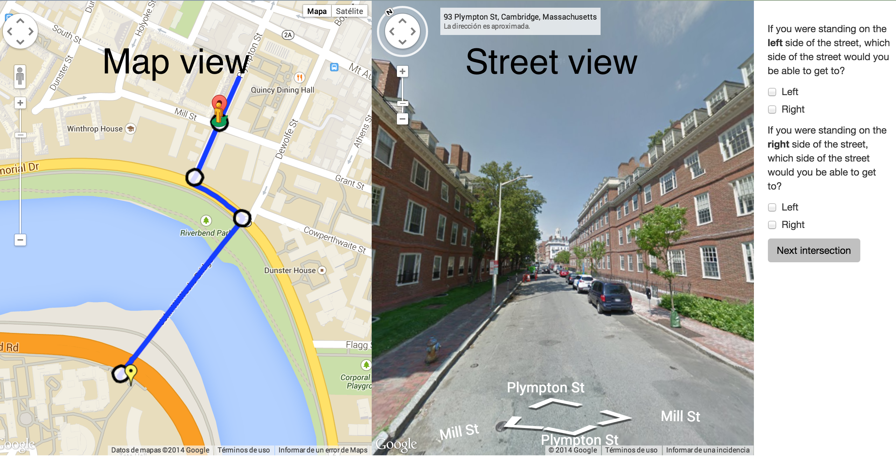
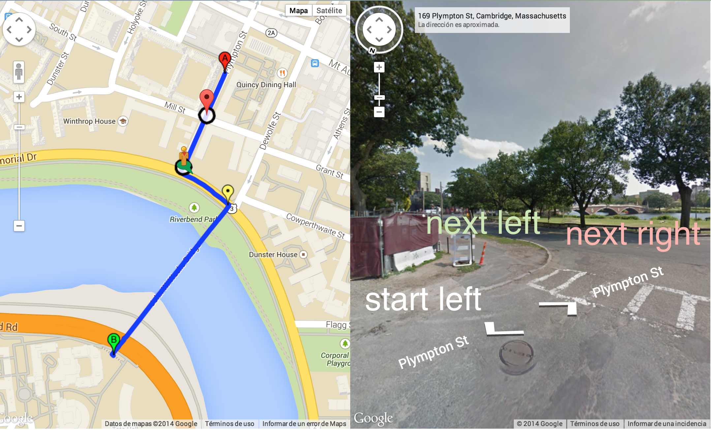
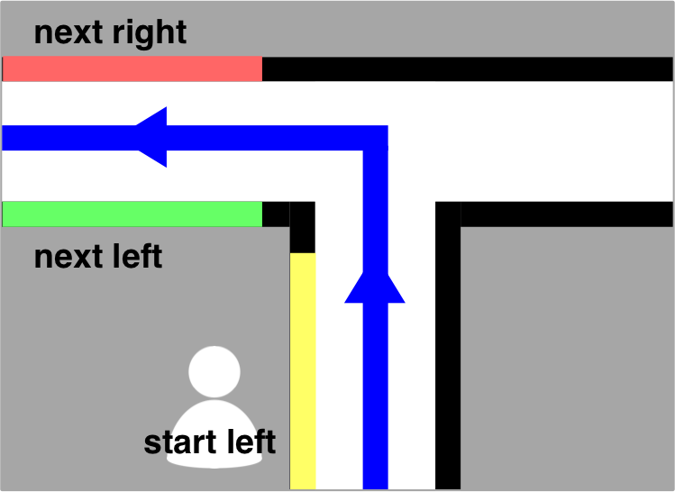
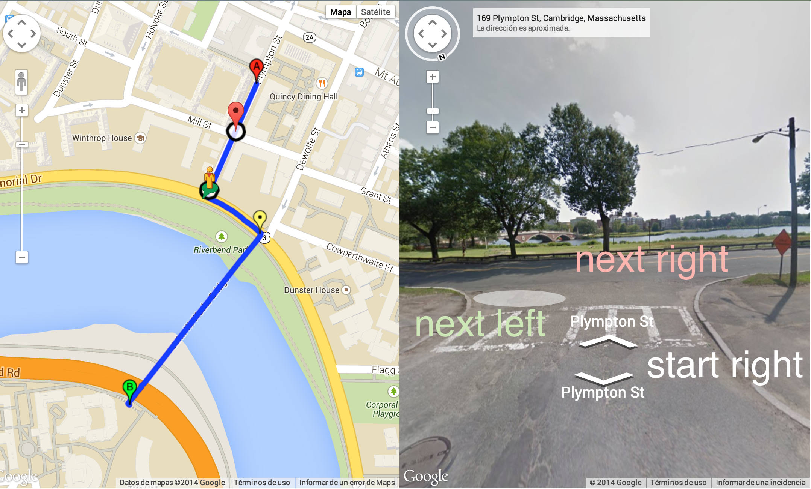
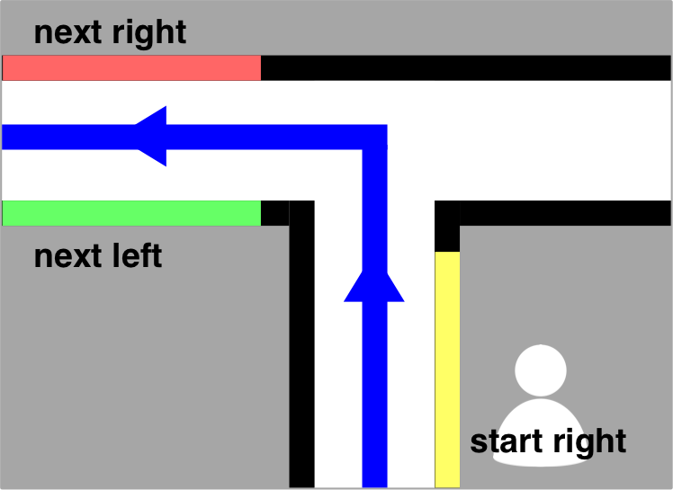

Instructions
Your job is to check the crossability of each of these intersections. You will be presented with each one at a time. Each screen with have a left pane with a route marked on Google Maps, that spans from Marker A to Marker B.

For each intersection, please complete the following steps:
1. Orient. Use the compass in the top left corner of the streetview pane or by dragging the screen to face the direction the route is going.
You can tell if you're in the right direction if the green arrow of the streetview figure is pointing towards Marker B, or the end of the route.

2. Check left crossability. Imagine you are starting on the left sidewalk before the intersection. Check to see if it would be possible to continue along the route and end up on the left sidewalk after the intersection and/or the right sidewalk after the intersection.
For example, if we look at this intersection, we see that if we start on the left sidewalk of the route before the intersection, we are able to get to the next left sidewalk of the path after the intersection because that is the same side of the street, but are unable to get to the right side of the path after the intersection because there is no crosswalk.


3. Check right crossability. Do the same thing to check which sides of the road a wheelchair would be able to travel if starting from the right side of the sidewalk before the intersection.
In this example, we see that if we start on the right sidewalk of the route before the intersection, we are able to get to the next left, but we are unable to get to the right side of the sidewalk after the intersection.

